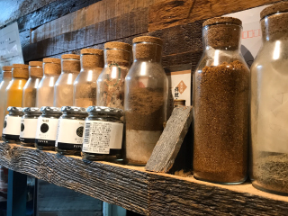

About Artisan Makoto
アルチザンマコトについて
「アルチザン マコト」のサイトを見て頂きましてありがとうございます。
「アルチザン」とは「職人」を意味するフランス語です。フランスのパリとニースで修行を積み、東京のフレンチレストランでシェフを務めてきた職人気質のフレンチシェフ「マコト」が還暦を過ぎてオープンした、ステーキとカリーの専門店です。
少し無愛想ですが、腕の確かなフレンチシェフ「マコト」が、こだわって選んだ良質の食材とそれを活かす調理法で、本物をカジュアルな価格で提供してまいります。
末永くご愛顧の程よろしくお願いいたします。

Restaurant
店内様子
- 2階広めのテーブル席(団体で貸し切りにすることも出来ます。)
- 2階多摩川を一望出来るテーブル席(アルチザンのカップルシートです。)
- 1階カウンター席＆キッチンです。
- 2階旅の想い出
- 
- 多様なインド産スパイスを使用しています。
- アルチザンマコトの外観です。
Art Gallery
店内アート作品の紹介
- 作品1
- 作品2
- 作品3
- 作品4
- マカイバリの商品紹介です。厳選された紅茶をお食事とお楽しみください。
- マカイバリ紅茶HAPPY HUNTER(1個1000円)